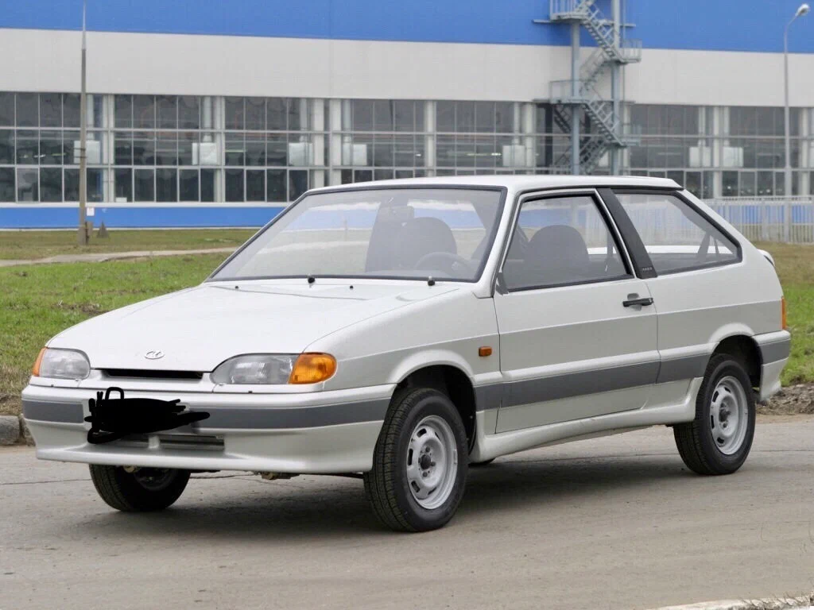
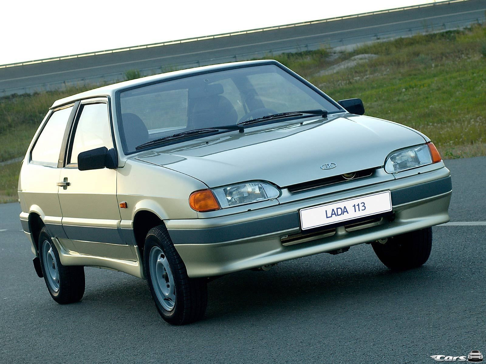
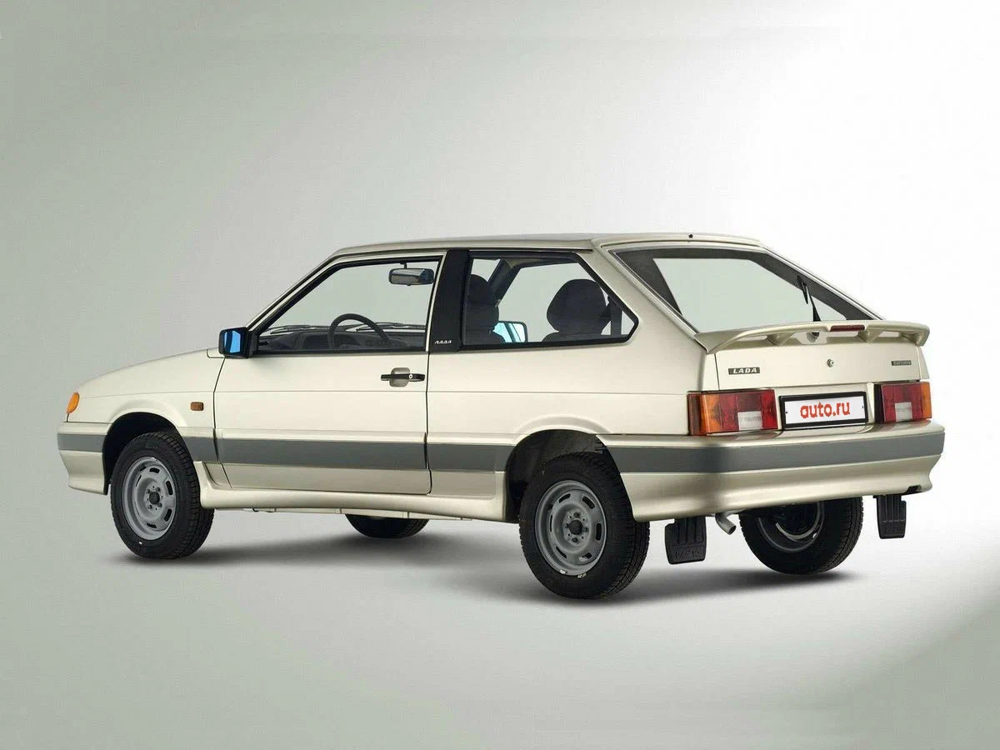

ВАЗ-2113 «Самара-2» (простореч. название «тринашка») — наследник ВАЗ-2108, можно сказать рестайлинг. Изначально производство «трехдверок» планировалось прекратить, но модель решили сохранить в производстве. Автомобиль производился ограниченными сериями с 2004 по 2013 год. Всего было выпущено 73 039 штук. Основная статья про семейство в разделе 2115.
Фото:

